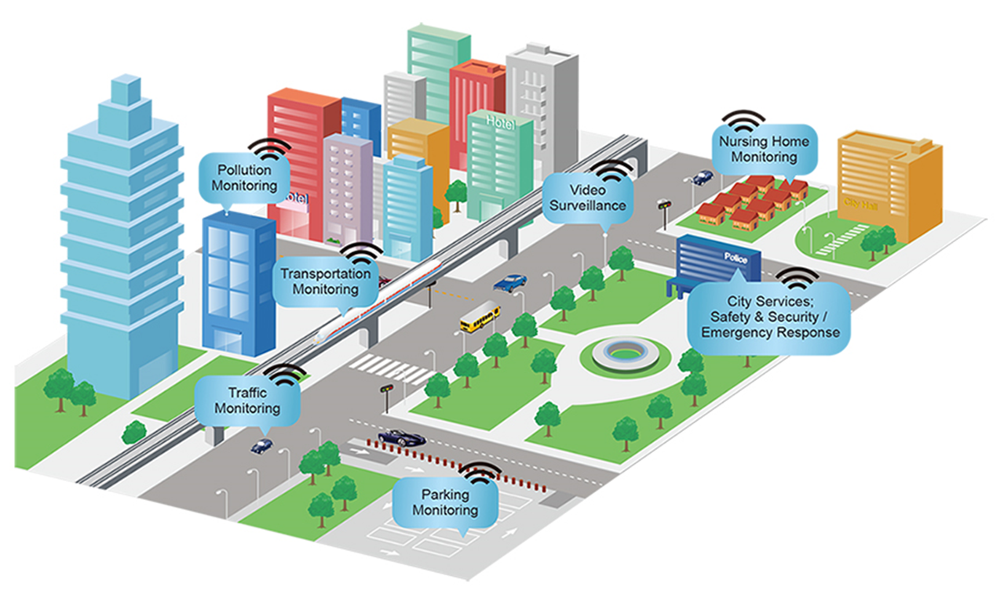

Smart City Equipment
Smart City equipement encompasses various installations such as streetlights, bus shelters, traffic lights, signage, fountains, newsstands, and surveillance cameras.
With the integration of Information and Communication Technologies (ICTs), urban furniture becomes interactive and intelligent.

It's part of a network enabling information or energy sharing, offering new services to citizens for sustainable development. Key goals include:
- Enhancing the efficiency of energy networks by optimizing their use.
- Improving energy efficiency by making urban furniture self-sufficient in energy and controlling consumption remotely.
- Providing new services to communities by disseminating information and expanding recharge points. For instance, this includes USB ports in bus shelters for device charging and intelligent streetlamps that light up only when someone is nearby, saving energy and enhancing safety.
In summary, smart urban furniture aims to make cities more connected, energy-efficient, and user-friendly while promoting sustainable resource management.